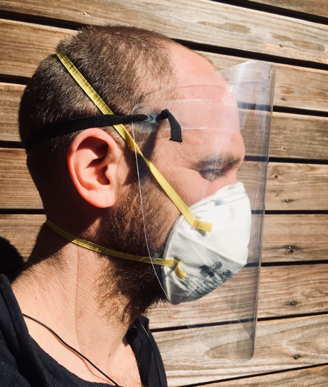
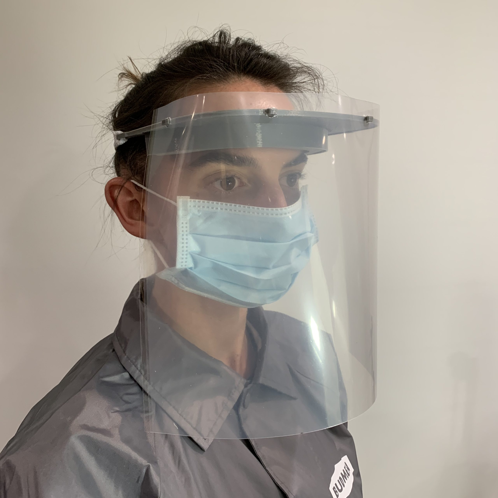

Fundraising
We are running a gofundme campaign to cover material costs for all manufactured PPE donated to hospitals. They campaign is being organized by Hack Manhattan, a 501(c)(3) exempt charity. Any surplus we cannot reasonably use will be donated to other COVID-19 relief efforts or relevant 501(c)(3) exempt charities not part of this campaign. Thank you for your financial support. [external link]
Delivered PPE
- 2020-3-22: 97 WISC shields to Elmhurst Hospital
- 2020-3-22: 50 WISC shields and 1 Miniband prototype to Mount Sinai Morningside Hospital
- 2020-3-24: 75 WISC shields to Elmhurst Hospital
- 2020-3-24: 70 WISC shields to NY Presbyterian Hospital
- 2020-3-24: 150 WISC shields to Maimonides Hospital
- 2020-3-25: 800 shields to Columbia University/NY Presbyterian Hospital
- 2020-3-25: 30 WISC shields to Weill Cornell/NY Presbyterian Hospital
- 2020-3-25: 100 WISC shields to Wyckoff Heights Medical Center
- 2020-3-25: 30 3DVerkstan shields to Weill Cornell/NY Presbyterian Hospital
- 2020-3-26: 50 WISC shields to Lincoln Hopsital
- 2020-3-26: 115 3DVerkstan shields to Weill Cornell/NY Presbyterian Hospital
- 2020-3-26: 30 NYU shields to Brookdale Medical Center
General Information
- UCLA has compiled information regarding DIY PPE designs here: [external link]
- TOM Global has a maker community here: [external link]
Masks and Respirators
We don't recommend 3D-printing masks and respirators. This blog post by Prusa explains it well.
However, sewn masks can be worn individually or over N95 masks for added protection. We list available designs below.
Olson Mask
Surgical masks can be sewn, according to UnityPoint Health hospital in Cedar Rapids. The Olson Mask pattern is available here: [Internal Link]UnityPoint Health – Cedar Rapids has an adequate supply of masks however – they remain in short supply nationwide due to COVID-19. The hospital is looking to be proactive in addressing the possibility of future supply challenges. Therefore, St. Luke's is calling all sewers to help make masks. Our hope is that we won't need them, but we must plan for the unknown.
Fabric masks offer the benefit of being able to be washed and re-used as each healthcare worker will need to change their mask several times during their shifts, as the mask becomes soiled or damp – for maximum protection.
Turban Project Mask
This is another available sewn mask pattern, available via Deaconess Hospital. Instructions and patterns are available here: [external link]A.B. Mask
This design was vetted by the Skilled Laborers Brigade and is being manufactured in NYC. Instructions are available here: [External Link]DIY Pleated Masks
Instructions are available here: [External Link]DIY Paper Mask
This mask can be assembled in about 10 minutes using a piece paper. Ideal for the general public to avoid using supply that might be neede by hospitals or those who can't otherwise get access to other masks. Instructions are available here: [Internal Link]Face Shield
Face shields are worn by doctors and nurses when intubating patients to prevent fluids from contacting their face. They are often worn on top of N95 masks, and protects both the user and the mask. Face shields can be manufactured easily with 3D printing, laser cutting plastic sheets, or potentially die-cutting plastic sheets.
Logistics + Legal
When manufacturing PPE, follow these instructions recommended by Prusa Research:- Act as if you were infected by the COVID-19 virus. Wear a face mask and a fresh pair of gloves when collecting each batch of printed parts. Store the parts immediately in a sealable bag.
- Talk with whoever you’re making the shields for, let them know about your manufacturing environment.
- There is still debate about how long the virus survives on plastic, but most sources mention 2-3 days. That means that by letting the packed face shields sit for 2-3 days before distributing them, you’ll greatly reduce risk of transmission.
- Do not store the entire stock in one place, minimize the risk of cross-contamination.
Fast Face Shield
CLICK HERE FOR INSTRUCTIONS AND GUIDES
3DVerkstan Face Shield

This is currently our preferred 3DP design. It uses a glasses-like design, and does not require foam or elastic parts. It is designed for plastic from a sheet protector, with holes punched with a standard hole puncher.
Models can be downloaded from here: [external link]
WISC

This is a face shield manufactured from a plastic sheet, foam tape, and elastic. This design takes far less time to manufacture, but is disposable due to the unsanitizable foam.
- Main website: [external link]
- Delve post: [external link]
- Design PDF: [external link]
- Plastic: [external link]
- Foam: [external link]
- Elastic: [external link]
- Staples
Open Source Face Shield
This is a face shield design by the NYU COVID-19 Task Force. It is manufactured from a plastic sheet and elastic. A well-placed plastic forehead piece prevents the need for a foam spacer.
The design is available here: [external link]
NYC Makers Miniband

We are now recommending the Prusa RC1 for hospital distribution.
The NYC Makers Miniband is a Prusa-shield-compatible 3DP headband designed by a member to significantly reduce the print time. We estimate a ~30 minute print time. Printer settings to minimize the print time are recommended, such as 2 shells, 15% infill and the highest layer height possible with your nozzle size.
- v1:
[internal link] - v2 with hooks for shield mounting:
[internal link] - v3 with small lips at the edge to prevent shield from slipping onto the frame and a taller elastic hole to fit 14mm elastic bands:
[internal link] - v4 with center link to reduce flexibility at forehead contacts:
[internal link] - v5 with fixed dimensions for prusa shield:
[internal link] - v6 final, evaluating at hospitals:
[internal link] - minified bottom support:
[internal link]
Prusa RC2

This is currently the most popular design for 3D printing face shields. Designed by Prusa Research, it involves 3D printed parts, a laser cut face shield, and an elastic backing.
- Blog post: [external link]
- Design: [external link]
Companies are also printing and selling this design.
- Shapeways is selling just the 3DP parts for $40 [external link]
- Voodoo Manufacturing will be selling the completed shield for $10 at bulk [external link]
Ongoing
Columbia
Columbia University is currently designing a face shield that can be entirely cut and assembled from a single sheet of plastic. This reduces manufacturing time and material sourcing issues. Once completed, they can be diecut in mass quantities. This website will be updated if a design is finalized and available.Budmen
This is also a 3D printed design by Budmen Industries. Requesting or manufacturing the design requires registration. [external link]